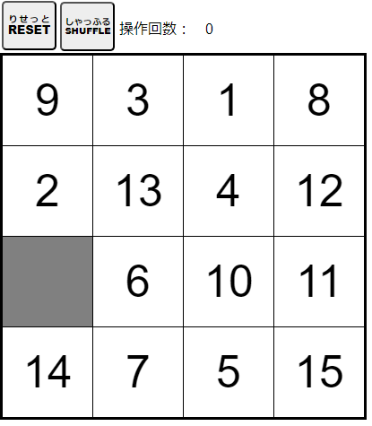

【15パズル】
左上
ひだりうえ
に
数字
すうじ
タイル１を
置
お
き、
数字
すうじ
タイルを
順番
じゅんばん
に
並
なら
べましょう。

・
空白
くうはく
の
周
まわ
りにある
数字
すうじ
タイルをクリック（タッチ）すると、その
数字
すうじ
タイルが
空白
くうはく
に
移動
いどう
します。
・
右下
みぎした
は
空白
くうはく
にします。
・[
RESET
りせっと
]ボタンをクリック（タッチ）すると
正解
せいかい
タイル
順
じゅん
になります。
・[
SHUFFLE
しゃっふる
]ボタンをクリック（タッチ）すると
問題
もんだい
を
作
つく
ります。
閉
と
じる